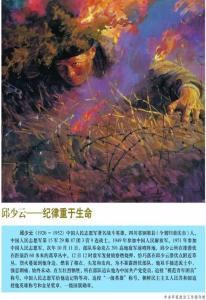

Major glory
After the war, in recognition of Qiu Shaoyun's lofty spirit of collectivism and tenacious revolutionary will, the Party committee of his army was regarded as a member of the Communist Party of China and posthumously awarded the title of Model Youth League Member according to his wishes during his lifetime.

on November 6, 1952, the leadership of the Chinese people's volunteers gave him a special honor.
on June 1, 1953, he was posthumously awarded the title of "first-class hero of the Chinese people's volunteers". On June 25 of the same year, the Standing Committee of the Democratic People's Republic of Korea's Supreme People's Assembly awarded the title of "Hero of the Democratic People's Republic of Korea" and also awarded the Medal of Venus and the Medal of Class I National Flag. Qiu Shaoyun's name was inscribed on the wall of 391 Highlands west of Jinhua: "Comrade Qiu Shaoyun, a great soldier who sacrificed for the whole and victory, will never die."
The Chinese People's Comfort Delegation to North Korea The Cultural and Artistic Delegation presented the special hero, Martyr Qiu Shaoyun, with a banner saying: "Qiu Shaoyun, a great soldier of the Chinese People's Volunteers, will never die".
The banner dedicated to the families of the martyrs of Qiu Shaoyun by all the officers and men of the 15th CPV reads: "The glory of the people of our motherland".
The Sichuan Provincial People's Government and the Sichuan Sub-Commission to Resist U.S. Aggression and Aid Korea wrote on the banner to the families of the martyrs in Qiu Shaoyun: "The Glorious Home".
Sichuan Military Command and Political Department wrote on their pennants to the families of martyrs in Qiu Shaoyun: "The soldiers of the great people, the immortal deeds of heroes".
on September 14, 2009, he was named one of the 100 people who have touched China since the founding of new China.
In September p>2018, the Political Work Department of the Central Military Commission uniformly printed 10 portrait portraits of Zhang Side, Dong Cunrui, Huang Jiguang, Qiu Shaoyun, Lei Feng, Su Ning, Li Xiangqun, Yang Yegong, Lin Junde and Zhang Chao, and distributed them to all units above company level.